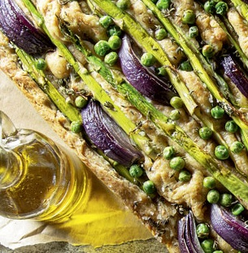
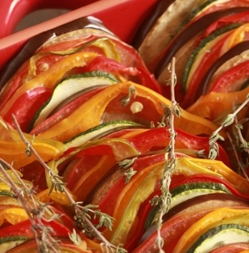

Pratos Principais
Entradas
Sopas
Sobremesas
Sobre nós
Nova Receita
Caril de legumes
Empadão de lentilhas e batata doce

Focaccia de espargos, cebola e ervilhas
Salada de grão e abacate
Hambúrguer de feijão preto
Legumes com "natas" no forno
Massa com molho de abóbora
Panzanella de Verão
Homemade vegan pizza

Ratatouille com quinoa e lentilhas
Tofu agridoce
Tofu grelhado e cebola roxa